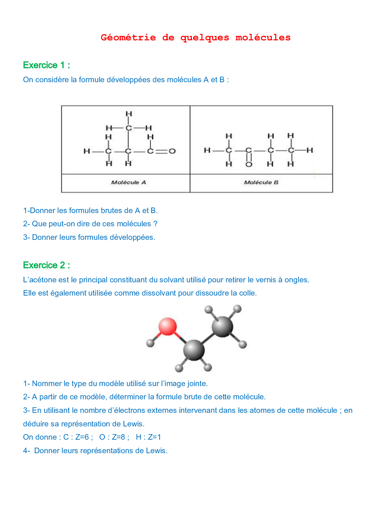
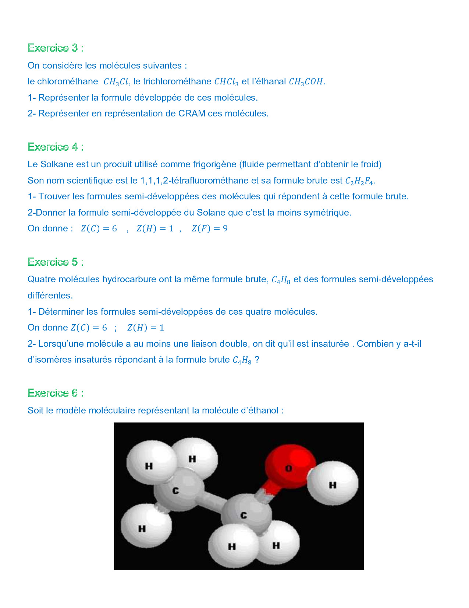
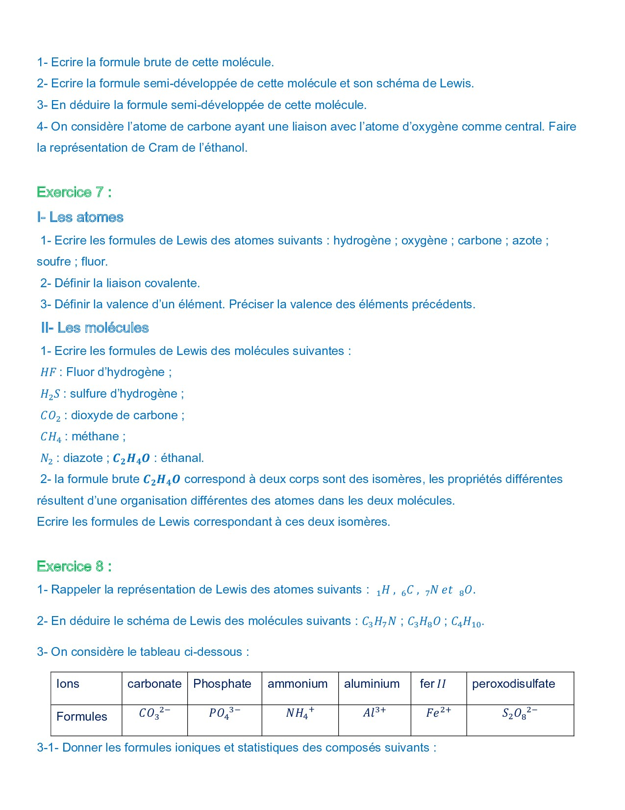
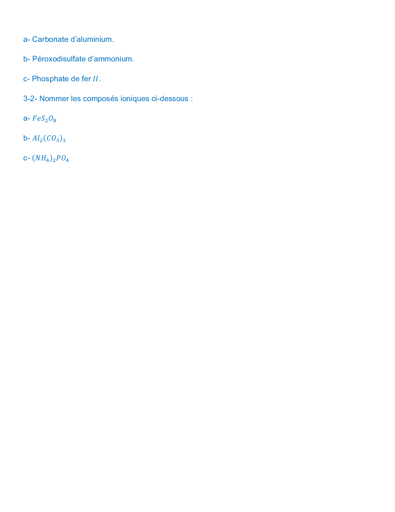

En comptant le nombre de chaque type d'atome dans les structures :
Ces deux molécules ont la même formule brute (\(\text{C}_4\text{H}_8\text{O}\)) mais des formules développées (et enchaînements d'atomes) différentes. Ce sont des isomères de constitution.
Il s'agit d'un modèle moléculaire éclaté (ou modèle de tétrandres/bâtonnets selon la représentation 3D).
La molécule contient 3 atomes de carbone (gris), 6 atomes d'hydrogène (blancs) et 1 atome d'oxygène (rouge). Sa formule brute est \(\text{C}_3\text{H}_6\text{O}\).
Nombre total d'électrons de valence : \(n_e = 3 \times 4 + 6 \times 1 + 1 \times 6 = 24\) électrons, soit **12 doublets** (liants et non-liants).
Le groupe carbonyl \(\text{C}=\text{O}\) possède 2 doublets liants (liaison double) et l'atome d'oxygène porte 2 doublets non-liants.
Les atomes de carbone de type \(\text{AX}_4\) ont une géométrie tétraédrique. Les liaisons sont représentées avec :
La molécule la moins symétrique est la première : \(\text{CF}_3-\text{CH}_2\text{F}\) (1,1,1,2-tétrafluoroéthane, dit Solkane).
Une molécule insaturée contient au moins une double liaison. Il y a 3 isomères insaturés (But-1-ène, But-2-ène, et 2-méthylpropène).